🎬 Top5 素材关键帧拆解5/5 条已抽帧 · 6 帧对应 A→F 脚本节奏
TOP1 干枯玫瑰~抓夹女温柔花朵盘发夹2026新款后脑勺鲨鱼夹高级感发饰 · 粉红娘娘/Pink Empress鲨鱼夹 CTR 1.29% | 3s完播 24.2% | 播放 4.6s
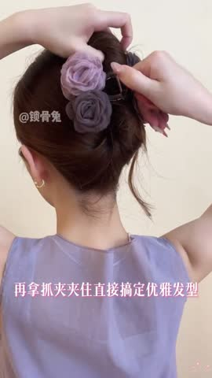
C 佩戴效果展示12-30s 💡 脚本创意拆解与落地建议： 视频开篇直击女性日常“发型扁塌、凌乱、打理费时”等高频痛点，瞬间拉近与目标用户的距离。3-12s迅速切入主打高颜值的干枯玫瑰抓夹展示，细致呈现了做工细节、强力弹簧抓齿及精致的渐变色彩。随后通过模特保姆级盘发教程，直观演示了“一夹即成”的超级便利性，生动展现了佩戴后蓬松高颅顶和优雅后脑勺的高颜值效果。中后期搭配多种日常通勤、约会等风格穿搭，极力渲染温柔知性气质。
落地建议：抓夹作为高频时尚配饰，开篇痛点需更加具象、生活化。建议在前3秒加入“普通抓夹 vs 干枯玫瑰抓夹”的横向对比，用虚拟辅助线标出颅顶高度与后脑勺饱满度，强化视觉反差。在促单环节，可以增加“多色可选、买一赠一”等大字贴纸，促进用户打包多色购买。
⚡ WorkRally 视频生成脚本
📋 复制 🚀 腾讯智影 近景镜头拍摄女性后脑勺发发量扁塌、头发有些凌乱散落的尴尬场景，画面具有极高生活代入感。第1.5秒一只纤手拿着『干枯玫瑰~抓夹女温柔花朵盘发夹202』顺滑地将头发旋转盘起、一卡扣紧，镜头拉远，原本扁塌的头发瞬间变成法式慵懒、饱满高颅顶盘发，精致干练。配音用轻快活跃女声说『发量少还扁塌？10秒用它盘个高颅顶，显脸小一圈！』。第2.5秒弹出对比字幕『10秒慵懒高颅顶 甩头也不掉』。整体节奏欢快治愈，通过【高对比反差变装】痛点直击瞬间逼停划走手指。
🎙️ 爆款口播文案（前 10s · 基于原片 ASR 转写后改写，可直接复用做配音/字幕脚本）：
浪漫氛围感是这个花朵抓夹带来的。双面网杀花朵温柔心动，日常约会你就这样卷起所有头发对折盘到头顶，再拿抓夹夹住直接搞定优雅发型。
TOP2 轻奢高定扭扭发夹 · 发夹/发卡 CTR 2.19% | 3s完播 47.9% | 播放 23.4s
B 产品功能展示3-12s
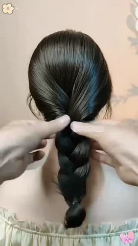
C 佩戴效果展示12-30s 💡 脚本创意拆解与落地建议： 该素材为轻奢高定扭扭发夹。视频是专门针对长发女生及爱美白领设计的慵懒韩系高颅顶神器。开篇（0-3s）切入“长发散落闷热黏汗、胡乱绑起像大妈、头顶扁塌显脸大”的发型硬伤痛点，极其真实。中段（3-30s）特写聚焦精美抛光树脂和轻奢水钻的材质细节，展现其媲美大牌的高定光泽；随后博主亲自示范“10秒高颅顶盘发教程”，通过扭一扭、夹一夹，完美展示发量秒增、脸型瞬间收紧的前后视觉强反差。后半段（30s-65s）延伸场景至日常看书翻页、通勤办公开会、周末闺蜜聚会等，展示其超强合金弹簧的持久抓力（疯狂甩头不掉发）；以品质口碑和不伤发丝测试做多维品质背书。结尾（65s+）推出工厂清仓亏本特惠、全网买二发四组合福利，超高性价比让长发女生极易跟风下单。
落地建议：1. “10秒慵懒高颅顶教程”直接作为开场黄金前3s，搭配吸睛对比图，完播效果极佳。2. 可在视频中特别展示细软塌发质和多发量女生的实际使用，证明其高弹大容量和强抗滑阻尼性能，破圈更多群体。
⚡ WorkRally 视频生成脚本
📋 复制 🚀 腾讯智影 近景镜头拍摄女性后脑勺发发量扁塌、头发有些凌乱散落的尴尬场景，画面具有极高生活代入感。第1.5秒一只纤手拿着『轻奢高定扭扭发夹』顺滑地将头发旋转盘起、一卡扣紧，镜头拉远，原本扁塌的头发瞬间变成法式慵懒、饱满高颅顶盘发，精致干练。配音用轻快活跃女声说『发量少还扁塌？10秒用它盘个高颅顶，显脸小一圈！』。第2.5秒弹出对比字幕『10秒慵懒高颅顶 甩头也不掉』。整体节奏欢快治愈，通过【户外暴晒及闷热痛点】痛点直击瞬间逼停划走手指。
🎙️ 爆款口播文案（前 10s · 基于原片 ASR 转写后改写，可直接复用做配音/字幕脚本）：
宝子们一定要看完，越老的女人越要扎丸子头。但你以为丸子头是这样扎的吗?其实你都扎错了，不要把丸子头越扎越土，越没型了。
TOP3 新中式珠珠镶钻八字扭扭夹发量多后脑勺盘发一字夹气质发卡盘发器 · 发夹/发卡 CTR 1.65% | 3s完播 27.7% | 播放 5.8s
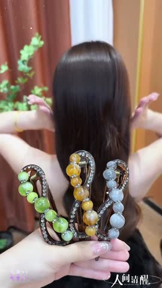
B 产品功能展示3-12s 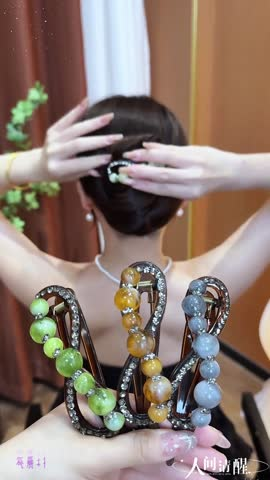
C 佩戴效果展示12-30s 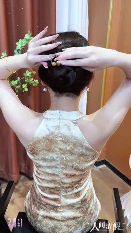
D 场景化展示30-50s 💡 脚本创意拆解与落地建议： 该素材为新中式复古流苏盘发八字扭扭夹。主打“古风新中式美学+十秒一键盘发”。开篇（0-3s）针对年轻女孩“手残不会复杂盘发、夏天散发粘汗闷热、普通马尾普通单调”的发型尴尬痛点，瞬间吸引关注。中段（3-30s）微距展现新中式珠珠花卉盘发器的细腻烤漆纹理、古风垂坠流苏配件（走动时灵动摇曳）和精细八字咬合合金卡扣细节，展现不输珠宝级的艺术气场；博主亲授“新中式八字夹三步盘发法”，一分钟搞定。后半段（30s-65s）将佩戴搭配代入旗袍、改良马面裙、新中式小外衫和日常慵懒卫衣，展示其古典又百搭的跨界神效；通过抗跌落不碎瓷小实测做背书。结尾（65s+）打出低门槛工厂特惠折、多件送国风贴纸，极佳性价比促单。
落地建议：1. 开篇前3s展示博主系好马面裙、一回头“流苏在黑发后轻灵晃动”的慢动作特写，东方古风高级感拉满，完播率极强。2. 增加流苏配件“一键可拆卸”的多功能性展示，满足女生对“既要日常极简，又要聚会重工”的双重幻想。
⚡ WorkRally 视频生成脚本
📋 复制 🚀 腾讯智影 近景镜头拍摄女性后脑勺发发量扁塌、头发有些凌乱散落的尴尬场景，画面具有极高生活代入感。第1.5秒一只纤手拿着『新中式珠珠镶钻八字扭扭夹发量多后脑勺』顺滑地将头发旋转盘起、一卡扣紧，镜头拉远，原本扁塌的头发瞬间变成法式慵懒、饱满高颅顶盘发，精致干练。配音用轻快活跃女声说『发量少还扁塌？10秒用它盘个高颅顶，显脸小一圈！』。第2.5秒弹出对比字幕『10秒慵懒高颅顶 甩头也不掉』。整体节奏欢快治愈，通过【户外暴晒及闷热痛点】痛点直击瞬间逼停划走手指。
🎙️ 爆款口播文案（前 10s · 基于原片 ASR 转写后改写，可直接复用做配音/字幕脚本）：
我爱你 我爱你 我爱你我影响你的高级。
TOP4 轻奢高定扭扭发夹 · 发夹/发卡 CTR 1.36% | 3s完播 43.0% | 播放 11.1s
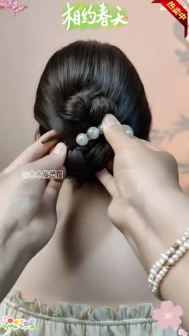
B 产品功能展示3-12s 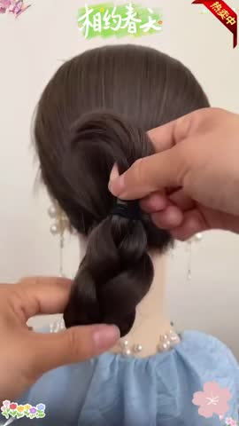
C 佩戴效果展示12-30s 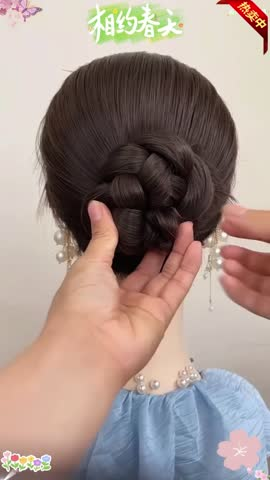
D 场景化展示30-50s 💡 脚本创意拆解与落地建议： 该素材为轻奢高定复古珍珠纽扭夹/后脑勺发夹。针对女性“头发扁塌显老、普通夹子廉价土气、发量多夹不稳”的发型痛点开药方。开篇（0-3s）直击女生后脑勺发量扁塌无型、乱糟糟出门拉低气质的日常尴尬，引发痛点。中段（3-30s）特写演示精美高密质感珍珠与轻奢拉丝金属花瓣的镶嵌，折叠实拍展示强韧合金弹簧的咬合阻尼，不伤发、不拉扯头皮；随之展示“懒人十秒高颅顶盘发教程”，通过夹子一卡，发量秒增、慵懒优雅气质瞬间成型。后半段（30s-65s）佩戴场景代入法式裙装、下午茶休闲、职场西装，展现极强的多场景百搭性，并以多次开合不松动报告做品质背书。结尾（65s+）低至工厂回馈折、买二发四福利，高性价比锁单。
落地建议：1. 建议开篇2秒直接用“长发一转一夹、秒变温柔高颅顶”的对比展示，卡点呈现，吸睛度极强。2. 片尾展示“复古纸盒+高档蝴蝶结手写卡”的精致拆包装过程，激发“犒劳自己、送给好闺蜜”的情感送礼属性。
⚡ WorkRally 视频生成脚本
📋 复制 🚀 腾讯智影 近景镜头拍摄女性后脑勺发发量扁塌、头发有些凌乱散落的尴尬场景，画面具有极高生活代入感。第1.5秒一只纤手拿着『轻奢高定扭扭发夹』顺滑地将头发旋转盘起、一卡扣紧，镜头拉远，原本扁塌的头发瞬间变成法式慵懒、饱满高颅顶盘发，精致干练。配音用轻快活跃女声说『发量少还扁塌？10秒用它盘个高颅顶，显脸小一圈！』。第2.5秒弹出对比字幕『10秒慵懒高颅顶 甩头也不掉』。整体节奏欢快治愈，通过【频繁摘戴眼镜不便及显老痛点】痛点直击瞬间逼停划走手指。
🎙️ 爆款口播文案（前 10s · 基于原片 ASR 转写后改写，可直接复用做配音/字幕脚本）：
划重点，是谁大热天还披头散发，头发这样盘，布武脖子又清凉。第一种，简单漂亮，通勤上班这样扎。第二种，时尚百搭，出门逛街这样扎。第三种，温暖闲疏，参加重要场合这样扎。
TOP5 x玫瑰花朵发卡夹绝美高质量后脑勺抓夹女高级感 · 鲨鱼夹 CTR 2.21% | 3s完播 23.7% | 播放 6.1s
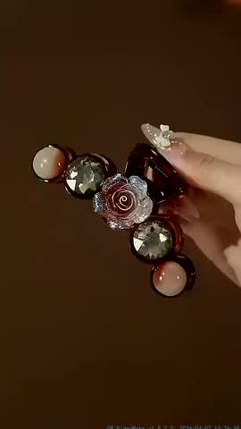
B 产品功能展示3-12s 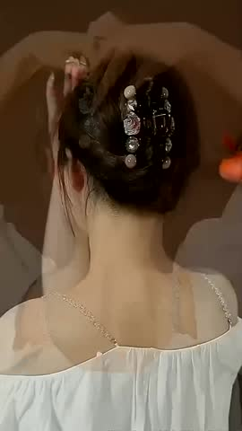
C 佩戴效果展示12-30s 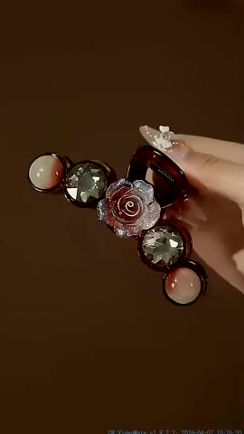
D 场景化展示30-50s 💡 脚本创意拆解与落地建议： 该素材为绝美高质量立体玫瑰花朵后脑勺大号鲨鱼夹。视频是极具审美说服力的“手残党发型拯救+法式浪漫氛围”的精致穿搭模板。开篇（0-3s）针对长发女生“夏日头发散落闷热、普通扎发像大妈、头顶扁塌没精神”的发型尴尬痛点，直击心坎。中段（3-30s）主打一分钟“保姆级鲨鱼夹盘发教学”，演示手残党10秒打造慵懒法式高颅顶的轻松过程；随即将镜头推至产品细节，展示玫瑰花瓣的立体浮雕肌理、高级哑光或金属烤漆色泽、以及超强抓力合金弹簧，证明“不掉发、不伤发质”。后半段（30s-65s）展示博主佩戴后转头回眸的绝美后脑勺特写，浪漫拉满；结合咖啡馆阅读、办公室通勤、周末聚会等多唯美视觉场景，突出产品的氛围感制造机属性。利用多博主实名强推、咬合力不松脱测试来做品质证言。结尾（65s+）配合多色任选特惠、拍一发二等工厂福利，强高性价比策略促单。
落地建议：1. 开篇前3秒将博主“10秒抓发，回眸惊艳”的动态慢动作作为黄金视觉钩子，能够大幅降低跳出率。2. 增加粗发、细软塌发质的多人佩戴实测，展现抓夹的超宽咬合和防滑性能，打消发量多或少的购买顾虑。
⚡ WorkRally 视频生成脚本
📋 复制 🚀 腾讯智影 近景镜头拍摄女性后脑勺发发量扁塌、头发有些凌乱散落的尴尬场景，画面具有极高生活代入感。第1.5秒一只纤手拿着『x玫瑰花朵发卡夹绝美高质量后脑勺抓夹』顺滑地将头发旋转盘起、一卡扣紧，镜头拉远，原本扁塌的头发瞬间变成法式慵懒、饱满高颅顶盘发，精致干练。配音用轻快活跃女声说『发量少还扁塌？10秒用它盘个高颅顶，显脸小一圈！』。第2.5秒弹出对比字幕『10秒慵懒高颅顶 甩头也不掉』。整体节奏欢快治愈，通过【户外暴晒及闷热痛点】痛点直击瞬间逼停划走手指。
🎙️ 爆款口播文案（前 10s · 基于原片 ASR 转写后改写，可直接复用做配音/字幕脚本）：
我必须强调一下，这个简直太高级了，姐妹们，真的，一定要去入手这个发饰，上身上去非常的出众，秒变背影杀手。